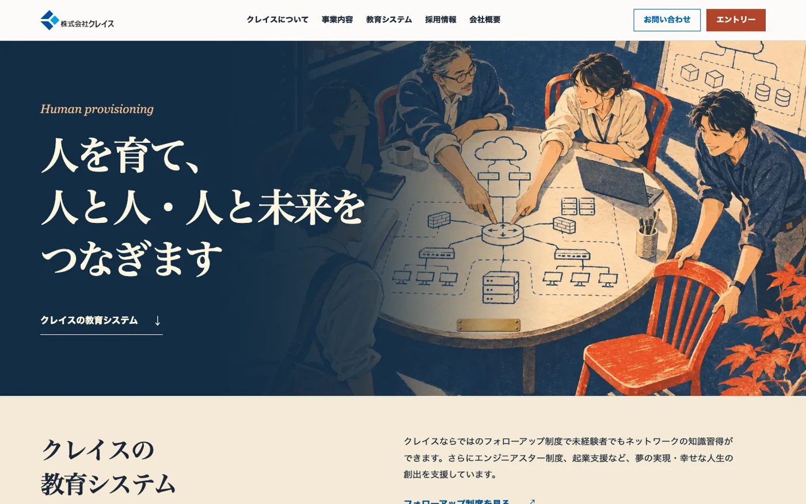

円卓から事業へ
前回の回答を反映 A案の見出しと円卓を引き継ぎ、第2版のグラデーションを絵の境目に使いました。
第2版のグラデーションを見る

第2版のA案 ↗円卓の上でゆっくり下へスクロールしてください。途中で指を止めると、絵と現場写真の境目を見られます。
紙のジオラマから各ページへ
模型を左右にドラッグするか、矢印で向きを変えてください。サーバー室・研修室・エントランスから各ページへ進めます。
通信の流れと仕事の工程
信号が端末からサーバーへ届く様子を見て、ページ上部の「動きを止める」を押してください。
育成の段階をたどる
目次の項目を押すか、各章を順に読んでください。読み進めた位置が目次にも反映されます。
読む・応募する
中途採用の募集要項から応募フォームまで進み、文章の追いやすさや操作を見比べてください。
チャット に貼る文を見る